Начало организации противотуберкулёзной службы в г. Химки относится к 1918 году, первым годам советской власти. Тогда, весной 1918 года, в доме купца Патрикеева на Петербургском тракте был организован туберкулёзный санаторий «Химки». Это здание является объектом культурного наследия регионального значения, построено в стиле модерн знаменитым архитектором Фёдором Осиповичем Шехтелем на берегу реки Химки. Усадебный дом можно считать одной из вершин в творчестве выдающегося зодчего. Располагался он в глубине участка и внешне напоминал средневековый замок. На въезде в усадьбу были установлены те самые белые столбы, давшие ей неофициальное название, находящееся в обиходе до настоящего времени.
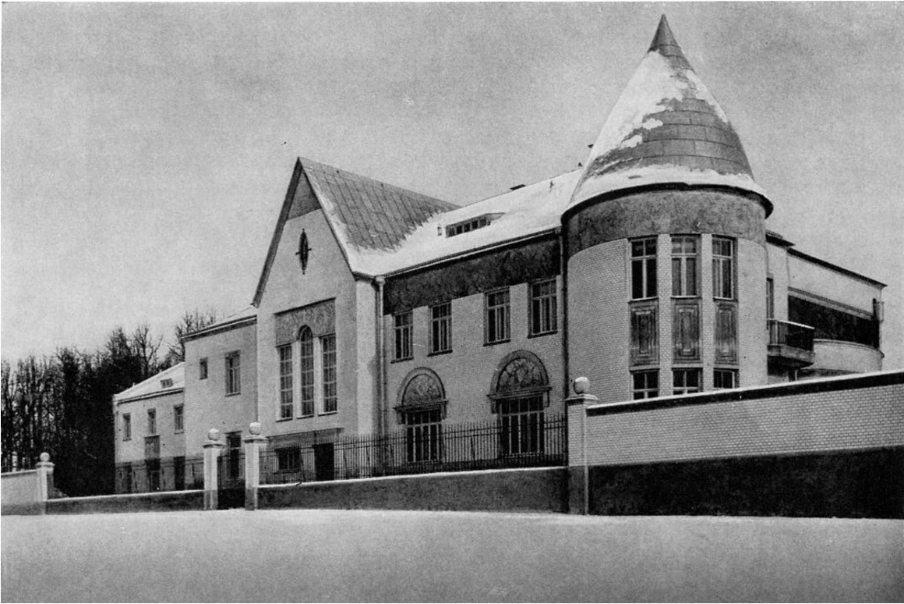
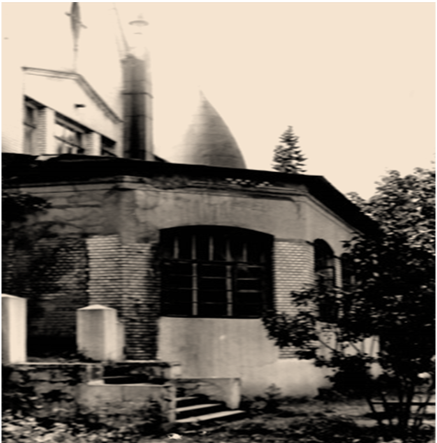
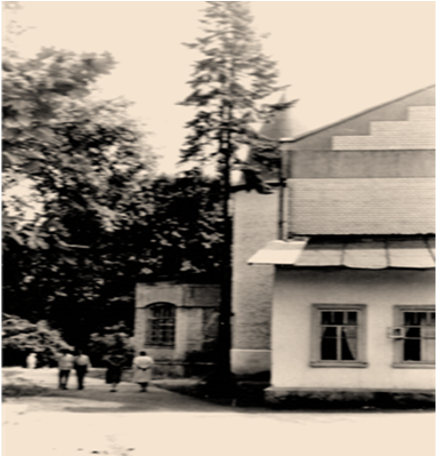
Это здание является объектом культурного наследия регионального значения, построено в стиле модерн знаменитым архитектором Фёдором Осиповичем Шехтелем на берегу реки Химки.
В годы Первой мировой войны Сергей Павлович открыл в своей усадьбе госпиталь, в котором лечились раненые и больные солдаты. Больницу устроили по европейскому образцу, закупив самое современное оборудование в Германии и Швейцарии.


После событий 1917 г. усадьбу экспроприировали и разместили здесь противотуберкулёзный санаторий «Химки» для рабочих и красноармейцев, во главе которого в свое время стоял известный врач-терапевт Федор Александрович Гетье, который с 1919 года был лечащим врачом В.И. Ленина и его семьи. Владимир Ильич дважды посещал санаторий. Считается, что бывшая усадьба Патрикеевых, в стенах которой одно медучреждение сменяло другое, стала прообразом психиатрической клиники, куда попал Иван Бездомный, из романа Булгакова «Мастер и Маргарита».
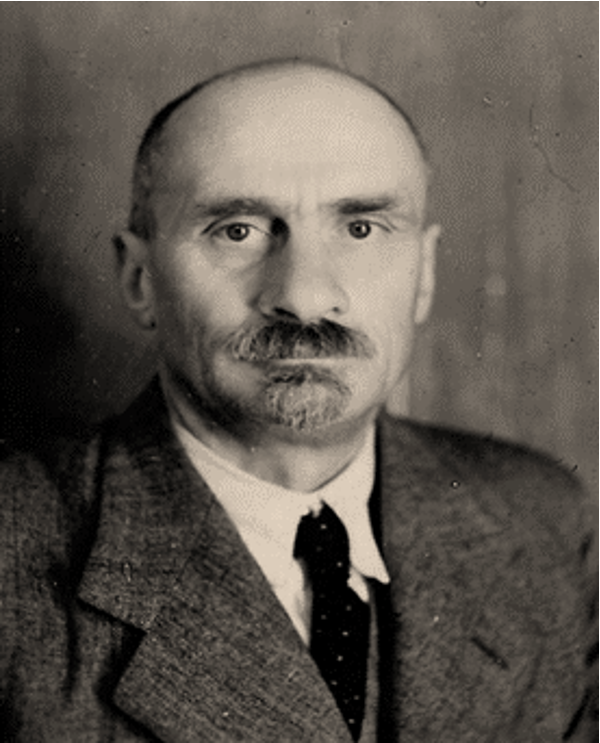
Федор Александрович Гетье
В 1943 году был создан противотуберкулёзный пункт для населения Химок.
В 1948 году Химкинский противотуберкулёзный пункт получил статус противотуберкулёзного диспансера.
В 1954 году переезжает в здание при поликлинике ЦРБ на улице Ленинский проспект, в поликлинике было выделено диспансеру одно крыло на третьем этаже, к нему были присоединены тубпункты заводов им. Лавочкина и Энергомаш, в связи с чем увеличился штат сотрудников. Были оборудованы рентгенкабинет и клиническая лаборатория. В то время в ведении диспансера находились Марьино-Знаменская больница на 30 коек и туберкулезный санаторий «Светлые горы» на 50 мест.
В мае 1965 года диспансер переезжает в восстановленное здание по адресу Железнодорожная 24, где организован и стационар на 85 коек. В новом помещении диспансера развернута клиническая лаборатория, ларингологический кабинет, аптека, оборудован рентгенкабинет и рентген-лаборатория, детский прием выведен в отдельное помещение. Построена своя дезкамера.
В 1966 приобретены два флюорографа — передвижной мелкокадровый и крупнокадровый стационарный.
С 1967 года проводилась трахеобронхоскопия.
Баклаборатория открылась в 1968 году.
В 1968 году установлен рентгеновский аппарат с томографом.
В мае 1972 года стационар при диспансере был закрыт, коечный фонд передан в больницу «Захарьино», в которой было выделено 60 коек для больных Химкинского района.
В 1980 году вся флюорографическая служба перешла в общую лечебную сеть.
В 1987 года диспансер переехал в здание ранее расформированного детского сада, где и располагается по настоящее время.
С 2014 году в связи с реорганизацией Химкинский диспансер присоединен к ГБУЗ МО Клинский ПТД, как Химкинское диспансерное отделение.
Цифровой рентгенодиагностический комплекс установлен в 2023 году.
Для жителей Химок фтизиатрический прием населения организован в Никольской участковой больнице, возглавил фтизиатрическую службу Ю.Б. Рапопорт.
В 1937 году поселок Химки преобразован в город, а по улице Кирова, 41, в деревянном бараке в 1943 году был создан противотуберкулёзный пункт, где главным врачом оставался Ю.Б. Рапопорт, участковый врач-фтизиатр — Штейнберг Л.Б. и детский врач — Штейнбок Б.С. Радиус обслуживания противотуберкулёзного пункта от станции Алабушево до станции Моссельмаш.
Главный врач 1943–1962 гг.
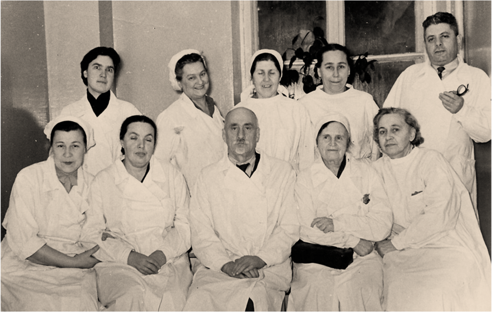
Юрий Борисович Рапопорт
Слева сидят: Никитина Екатерина Ивановна – старшая медсестра; Штейнбок Бронислава Самуиловна – врач-фтизиопедиатр; Рапопорт Юрий Борисович – главный врач; Харлампович Мария Константиновна – лаборант; Пыжова К.М. – врач отоларинголог. Справа стоит Штейнберг Лев Борисович – участковый врач.
Екатерина Ивановна старожил диспансера, стаж работы более 40 лет. Ветеран труда и ветеран ВОВ. Екатерина Ивановна сохранила историю развития противотуберкулёзной службы в Химках в послевоенное время: «Вернувшись с фронта в 1947 г., врач Рапопорт Юрий Борисович, как энтузиаст, начал хлопотать об открытии тубпункта, так как очень большой процент населения умирал от туберкулёза. При поликлинике нам было выделено три маленьких кабинета по 10 кв. м. В одном кабинете было детское отделение, в другом кабинете процедурный, где накладывали пневмоторакс и делали 30 поддуваний в день. Других методов лечения туберкулёза в те годы не было. В третьем кабинете велся прием взрослых больных. Приемы больных были очень большими по 90–100 человек в день, а в штате состояло три врача. Главный врач — Рапопорт Юрий Борисович, участковый врач — Штейнберг Лев Борисович и детский врач — Штейнбок Бронислава Самуиловна. Кроме того в тубпункте работали четыре медсестры. Я, Никитина Екатерина Ивановна — старшая медсестра, я же завхоз, я же медстатист, я же сестра-хозяйка — все в одном лице. Одна медсестра на приеме и две медсестры на участке — Евдокия Дмитриевна Абросимова и Мария Константиновна Харлампович. На учете в тубпункте состояло тысячи больных и в основном бациллярных». «Обслуживал тубпункт большой район от платформы Алабушево до станции Моссельмаш. При тубпункте не было рентгенкабинета и лаборатории. Снимки и анализы проводились в поликлиниках по месту жительства».
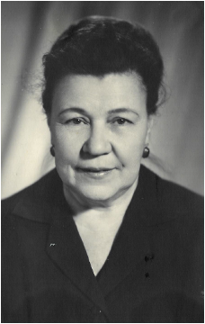
Никитина Екатерина Ивановна. Старшая медицинская сестра. 1949 г.
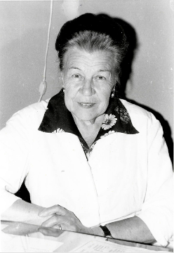
Никитина Екатерина Ивановна. Старшая медицинская сестра. 1989 г.
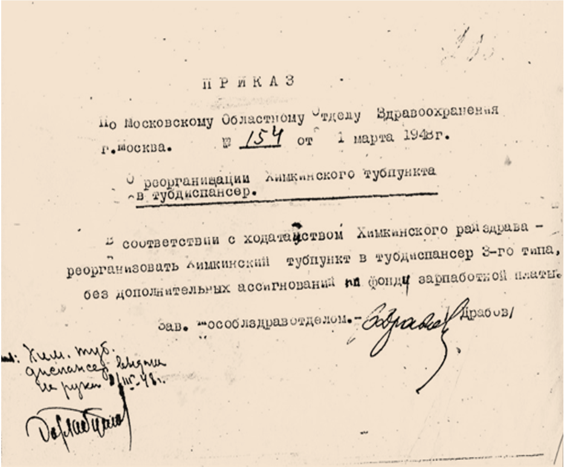
Приказ Московского областного отдела здравоохранения № 154 от 1 марта 1948 года о реорганизации химкинского тубпункта. Химкинский туберкулёзный кабинет был реорганизован в диспансер.
С 2 февраля 1962 г. по 27 августа 1982 г. тубдиспансер возглавлял главный врач — Булдакова Евгения Павловна. Благодаря её стараниям в 1965 году в городе Химки впервые открыт противотуберкулёзный диспансер со стационаром на 85 коек и собственное детское отделение. В 1964 году Евгения Павловна организовала общественный Совет, члены которого сами оформили документацию, необходимую для капитального ремонта выделенного здания. При помощи общественного совета было составлено проектное задание и все сметы. В мае 1965 года Химкинский противотуберкулезный диспансер получил капитально отремонтированное приспособленное помещение: деревянное двухэтажное здание на берегу канала в городе Химки. Диспансер занимал территорию в 4 гектара с обустроенным парком для прогулок больных.
Главный врач с 1962 по 1982 гг.
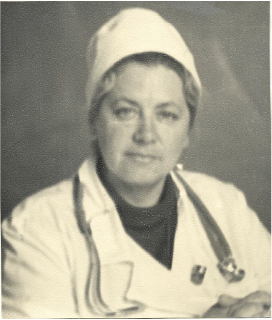
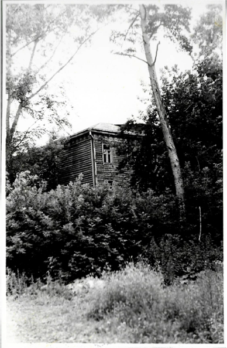
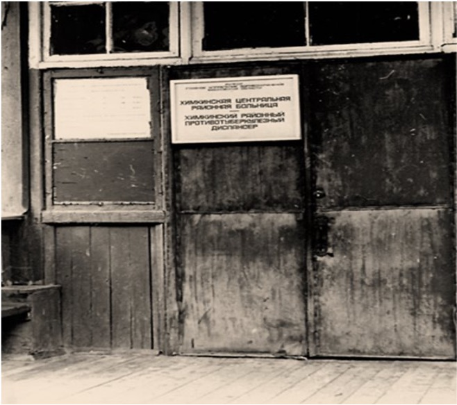
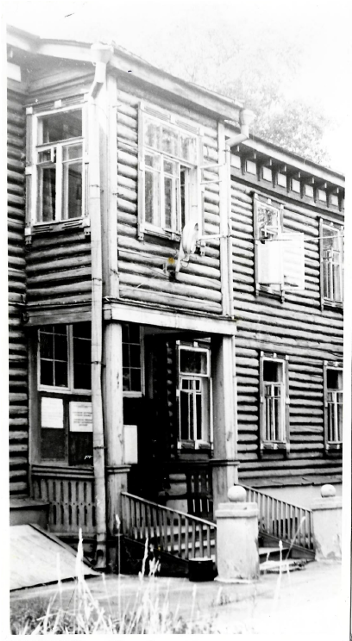
Здание по адресу Железнодорожная 24.
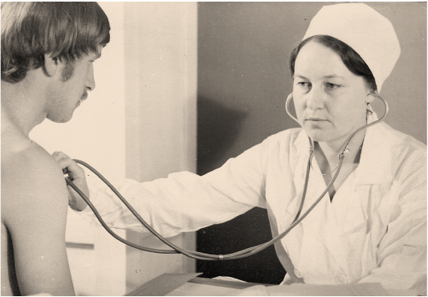
Заведующая Химкинского диспансерного отделения Новикова Галина Акимовна. 1969 г.
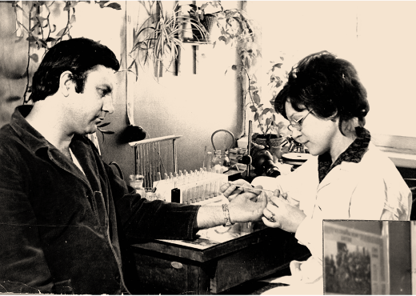
Лаборант клинической лаборатории Плеханова Н.А. в часы приема пациентов. Работала в Химкинском диспансерном отделении с января 1968 года.
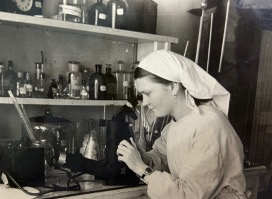
Лаборант бактериологической лаборатории Веденеева Л.В., 1969 г.
Сапожников А.Ф. возглавил Химкинский противотуберкулёзный диспансер в 1982 году и руководил им до 2014 года. Александр Фёдорович рассказывал, что ветхое деревянное здание диспансера, по адресу Железнодорожная 24, было уже не пригодным и в 1985 году Александр Фёдорович вступил в борьбу за право пользования кирпичным зданием ранее расформированного детского сада по адресу Спартаковская 11А. Этот садик был закрыт решением Роспотребнадзора, в связи с превышающими допустимую норму вредными выбросами рядом расположенного производства. На право пользования зданием претендовали несколько организаций: администрация рядом расположенного производства, Всесоюзный проектно-технологический институт, МФТИ. Сапожникову А.Ф. удалось отстоять право на это здание в Химкинском горисполкоме. Здание оказалось в неудовлетворительном техническом состоянии, для ввода его в эксплуатацию требовались значительные финансовые затраты. В условиях недофинансирования противотуберкулезной службы Александр Федорович для сбора средств смог привлечь руководителей промышленных предприятий города, в том числе и благодаря содействию председателя горисполкома города Химки. На эти средства было не только восстановлено здание, но и проведен силовой кабель для рентгеновской установки. За многолетнюю добросовестную службу Сапожников А.Ф. был награжден орденом «За заслуги перед Отечеством» 2 степени, медалью «Ветеран труда», личной благодарностью от С.К. Шойгу, многочисленными грамотами и благодарственными письмами от Министерства здравоохранения Московской области.
Главный врач 1982–2014 гг.
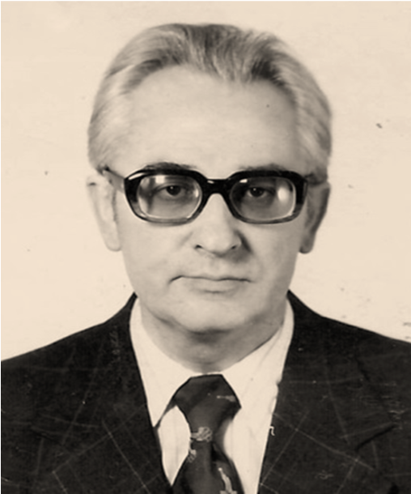
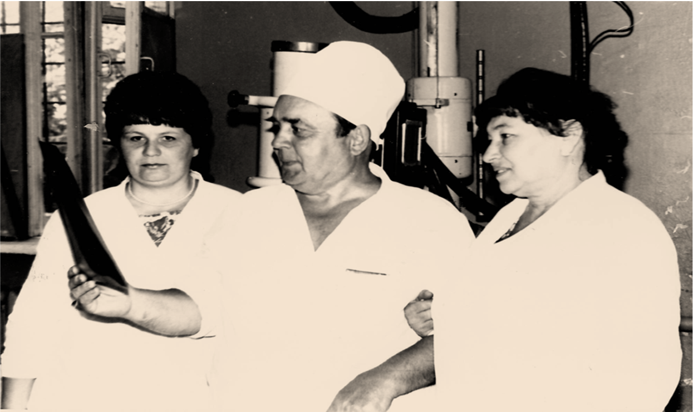
Рентгенкабинет. Июль 1989 года. Врач-рентгенолог Бахарев В.М. с сотрудницами Глухенькой Л.И. (лаборант рентгенкабинета) и Ворошиловой Л.П. (санитарка рентгенкабинета).
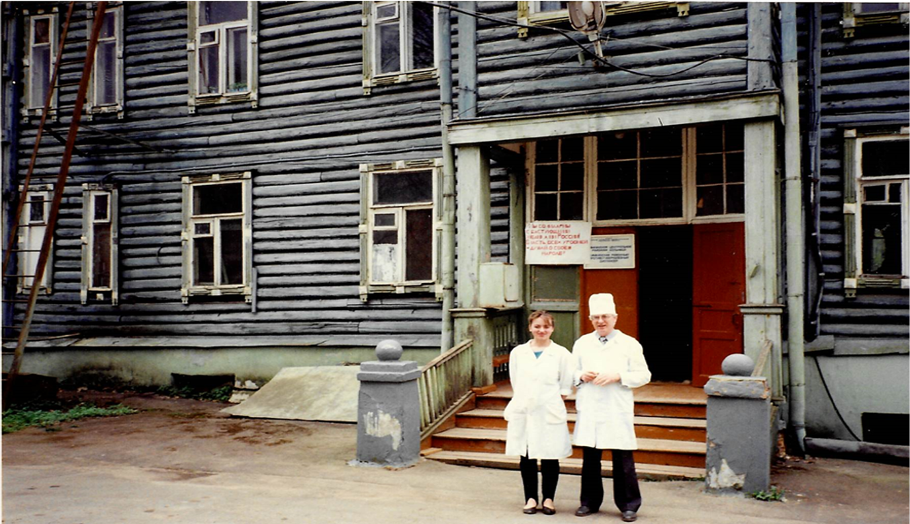
А.Ф. Сапожников на фоне здания
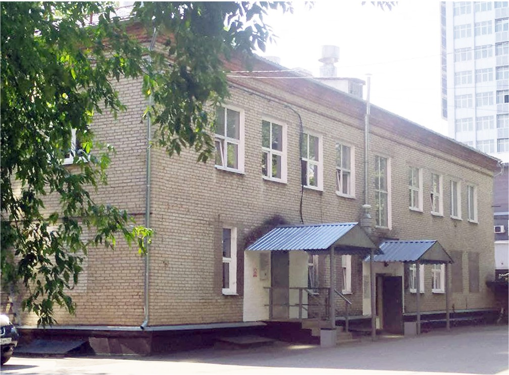
Химки, Спартаковской 11А. 2021 г.
В 2015 году в связи с реорганизацией Химкинский противотуберкулезный диспансер был присоединен к Клинскому противотуберкулезному диспансеру. А с 2018 года Клинский противотуберкулезный диспансер вошел в структуру Московского областного противотуберкулезного диспансера как филиал ГБУЗ МО «Московский областной противотуберкулезный диспансер».
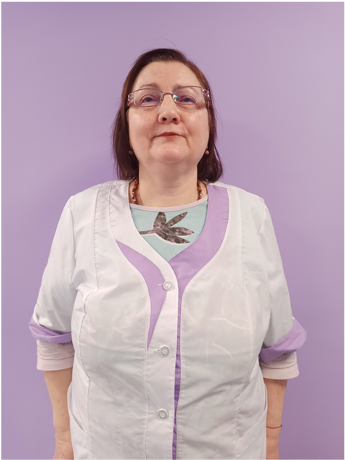
Медведева Светлана Владимировна. Работала в Химкинском ПТД с января 1993 г. по 2023 г. в должности рентген-лаборант. За долгую добросовестную работу дважды награждалась благодарственными письмами от министерства здравоохранения Московской области.
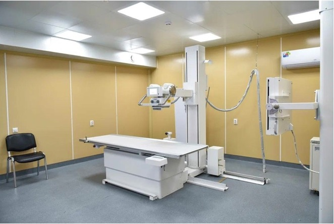
Цифровой рентгенодиагностический комплекс 2023 г.
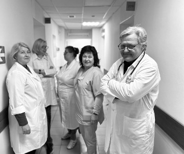
Сотрудники диспансера 2023 г.
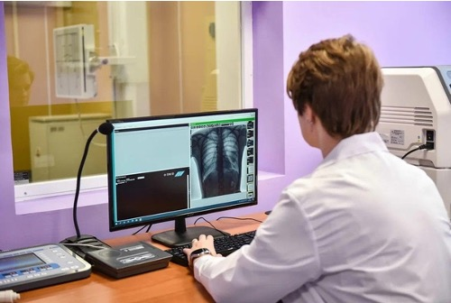
Сотрудники диспансера 2023 г.
История диспансера создавалась благодаря энтузиазму и характеру людей. Память только о некоторых из них сохранило время.